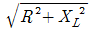
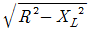
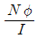
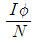
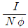
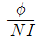

전기기능사 (2006-04-02 기출문제)
1과목: 전기 이론
1. 자장의 세기 10AT/m인 점에 자극을 놓았을 때 50N의 힘이 작용하였다. 이 자극의 세기는 몇 Wb인가?
- 5
- 10
- 15
- 25
(정답률: 83%)

2. 전기분해에 의해서 석출되는 물질의 양은 전해액을 통과한 총 전기량과 같으며, 그 물질의 화학당량에 비례한다. 이것을 무슨 법칙이라 하는가?
- 줄의 법칙
- 플레밍의 법칙
- 키르히호프의 법칙
- 패러데이의 법칙
(정답률: 85%)
3. 1μF, 3μF, 6μF의 콘덴서 3개를 병렬로 연결할 때 합성정전 용량은 몇 μF인가?
- 10
- 8
- 6
- 4
(정답률: 90%)
4. 단상 100V, 800W, 역률 80%인 회로의 리액턴스는 몇 Ω인가?
- 10
- 8
- 6
- 2
(정답률: 38%)
5. 동기 발전기의 출력 P=(VE)/Xs·sinδ[W]에서 각 항의 설명 중 잘못된 것은?
- V : 단자전압
- E : 유도 기전력
- Xs : 동기 리액턴스
- δ : 역률각
(정답률: 61%)
6. 어떤 회로의 부하전류가 10A, 역률이 0.8일 때 부하의 유효 전류는 몇 A인가?
- 6
- 8
- 10
- 12
(정답률: 69%)
7. 용량 30AH의 전지는 2A의 전류로 몇 시간 사용할 수 있겠는가?
- 3
- 7
- 15
- 30
(정답률: 88%)
8. 직렬공진회로에서 최대가 되는 것은?(오류 신고가 접수된 문제입니다. 반드시 정답과 해설을 확인하시기 바랍니다.)
- 전류
- 임피던스
- 리액턴스
- 저항
(정답률: 59%)
9. RL 직렬회로에서 임피던스 Z의 크기를 나타내는 식은?
- R2+XL2
- R2-XL2


(정답률: 83%)
10. 전압 1.5V, 내부저항 0.2Ω의 전지 5개를 직렬로 접속하면 전전압은 몇 V인가?
- 5.7
- 0.2
- 1.0
- 7.5
(정답률: 83%)
11. 자체 인덕턴스가 L1, L2인 두 코일을 직렬로 접속하였을 때 합성 인덕턴스를 나타내는 식은? (단, 두 코일간의 상호 인덕턴스는 M이라고 한다.)
- L1+L2+M
- L1-L2+M
- L1+L2+2M
- L1+L2±M
(정답률: 80%)
12. 권수 N[T]인 코일에 I[A]의 전류가 흘러 자속 ø[Wb]가 발생할 때의 인덕턴스는 몇 [H]인가?




(정답률: 74%)
13. 긴 직선 도선에 I의 전류가 흐를 때 이 도선으로부터 r만큼 떨어진 곳의 자장의 세기는?
- 전류 I에 반비례하고 r에 비례한다.
- 전류 I에 비례하고 r에 반비례한다.
- 전류 I의 제곱에 반비례하고 r에 반비례한다.
- 전류 I에 반비례하고 r의 제곱에 반비례한다.
(정답률: 71%)
14. 등전위면은 전기력선과 어떤 관계가 있는가?
- 평행한다.
- 주기적으로 교차한다.
- 직각으로 교차한다.
- sin30도의 각으로 교차한다.
(정답률: 79%)
15. v=Vm·sin(ωt+30°)[V], i=Im·sin(ωt-30°)[A]일 때 전압을 기준으로 하면 전류의 위상차는?
- 60도 뒤진다.
- 60도 앞선다.
- 30도 뒤진다.
- 30도 앞선다.
(정답률: 61%)
16. 자속밀도 2wb/m2의 평등 자장 안에 길이 20㎝의 도선을 자장과 60°의 각도로 놓고 5A의 전류를 흘리면 도선에 작용하는 힘은 몇 N인가?
- 0.1
- 0.75
- 1.732
- 3.46
(정답률: 63%)
17. 플레밍의 오른손 법칙에서 셋째 손가락의 방향은?
- 운동방향
- 자속밀도의 방향
- 유도 기전력의 방향
- 자력선의 방향
(정답률: 77%)
18. 0.2.의 컨덕턴스를 가진 저항체에 3A의 전류를 흘리려면 몇 V의 전압을 가하면 되겠는가?
- 5
- 10
- 15
- 20
(정답률: 76%)
19. 파형률과 파고율이 모두 1인 파형은?
- 삼각파
- 정현파
- 구형파
- 반원파
(정답률: 68%)
20. L[H]의 코일에 I[A]의 전류가 흐를 때 저축되는 에너지는 몇 [J]인가?
- LI
- 1/2 LI
- LI2
- 1/2 LI2
(정답률: 75%)
2과목: 전기 기기
21. 히스테리시스 곡선이 횡축과 만나는 점의 값은 무엇을 나타내는가?
- 보자력
- 잔류자기
- 자속밀도
- 자장의 세기
(정답률: 78%)
22. 출력 15kW, 1500rpm으로 회전하는 전동기의 토크는 약 몇kg.m 인가?
- 6.54
- 9.75
- 47.78
- 95.55
(정답률: 63%)
23. 퍼센트 저항강하 3%, 리액턴스 강하 4%인 변압기의 최대 전압 변동률은 몇 %인가?
- 1
- 3
- 4
- 5
(정답률: 68%)
24. 역저지 3단자에 속하는 것은?
- SCR
- SSS
- SCS
- TRIAC
(정답률: 66%)
25. 3상 전동기에 제동 권선을 설치하는 주된 목적은?
- 출력증가
- 효율증가
- 역률개선
- 난조방지
(정답률: 76%)
26. 유도 전동기에서 슬립이 가장 큰 상태는?
- 무부하 운전시
- 경부하 운전시
- 정격부하 운전시
- 기동시
(정답률: 65%)
27. 60Hz의 동기 전동기가 2극일 때 동기속도는 몇 rpm인가?
- 7200
- 4800
- 3600
- 2400
(정답률: 83%)
28. 3상 유도 전동기에서 2차측 저항을 2배로 하면 그 최대 토크는 어떻게 되는가?
- 변하지 않는다.
- 2배로 된다.
- √2배로 된다.
- 1/2 배로 된다.
(정답률: 37%)
29. 다극 중권 직류발전기의 전기자 권선에 균압 고리를 설치하는 이유는?
- 브러시에서 불꽃을 방지하기 위하여
- 전기자 반작용을 방지하기 위하여
- 정류 기전력을 높이기 위하여
- 전압 강하를 방지하기 위하여
(정답률: 52%)
30. 역률과 효율이 좋아서 가정용 선풍기, 전기세탁기, 냉장고 등에 주로 사용되는 것은?
- 분상 기동형 전동기
- 콘덴서 기동형 전동기
- 반발 기동형 전동기
- 셰이딩 코일형 전동기
(정답률: 77%)
31. 직류를 교류로 변환하는 장치로서 초고속 전동기의 속도 제어용 전원이나 형광등의 고주파 점등에 이용되는 것은?
- 인버터
- 컨버터
- 변성기
- 변류기
(정답률: 77%)
32. 분권전동기에 대한 설명으로 틀린 것은?
- 토크는 전기자 전류의 자승에 비례한다.
- 부하전류에 따른 속도 변화가 거의 없다.
- 계자회로에 퓨즈를 넣어서는 안 된다.
- 계자 권선과 전기자 권선이 전원에 병렬로 접속되어 있다.
(정답률: 45%)
33. 회전자 입력 10kW, 슬립 4%인 3상 유도전동기의 2차 동손은 몇 kW인가?
- 9.6
- 4
- 0.4
- 0.2
(정답률: 54%)
34. 직류기의 주요 구성 3요소가 아닌 것은?
- 전기자
- 정류자
- 계자
- 보극
(정답률: 83%)
35. 변압기 결선 방식에서 Δ-Δ 결선방식에 대한 설명으로 틀린 것은?
- 단상 변압기 3대중 1대의 고장이 생겼을 때 2대로 V결선하여 사용할 수 있다.
- 외부에 고조파 전압이 나오지 않으므로 통신장해의 염려가 없다.
- 중성점 접지를 할 수 없다.
- 100kV 이상 되는 계통에서 사용되고 있다.
(정답률: 53%)
36. 발전제동의 설명으로 잘못된 것은?
- 직류 전동기는 전기자 회로를 전원에서 끊고 저항을 접속한다.
- 유도 전동기는 1차 권선에 직류를 통하고 2차쪽(회전자)은 단락한다.
- 전동기를 발전기로 운전하여 회전부분의 운동에너지를 전기회로 중의 저항에서 열로 소비시키면서 제동하는 방법이다.
- 전동기의 유도 기전력을 전원 전압보다 높게 한다.
(정답률: 40%)
37. 변압기의 원리는 어느 작용을 이용한 것인가?
- 전자유도작용
- 정류작용
- 발열작용
- 화학작용
(정답률: 70%)
38. 계기용 변압기의 2차측 단자에 접속하여야 할 것은?
- O.C.R
- 전압계
- 전류계
- 전열부하
(정답률: 62%)
39. 변압기의 임피던스 전압에 대한 설명으로 옳은 것은?
- 여자전류가 흐를 때의 2차측 단자전압이다.
- 정격전류가 흐를 때의 2차측 단자전압이다.
- 정격전류에 의한 변압기 내부 전압강하이다.
- 2차 단락전류가 흐를 때의 변압기 내의 전압강하이다.
(정답률: 45%)
40. 동기발전기의 병렬운전에서 같지 않아도 되는 것은?
- 위상
- 주파수
- 용량
- 전압
(정답률: 69%)
3과목: 전기 설비
41. 전선과 기계기구의 단자를 접속할 때 사용되는 것은?
- 절연테이프
- 동관단자
- 관형 슬리브
- 압축형 슬리브
(정답률: 45%)
42. 철근 콘크리트주의 길이가 16m이고 설계하중이 80kg인 것을 지반이 약한 곳에 시설하는 경우, 그 묻히는 깊이를 다음 보기 항과 같이 하였다. 옳게 시공된 것은?
- 1m
- 1.8m
- 2m
- 2.8m
(정답률: 55%)
43. 네온 변압기 외함의 접지공사는?(관련 규정 개정전 문제로 여기서는 기존 정답인 4번을 누르면 정답 처리됩니다. 자세한 내용은 해설을 참고하세요.)
- 제1종
- 제2종
- 특별제 3종
- 제3종
(정답률: 65%)
44. 피쉬 테이프(Fish tape)의 용도로 옳은 것은?
- 전선을 테이핑하기 위하여 사용된다.
- 전선관의 끝마무리를 위해서 사용된다.
- 배관에 전선을 넣을 때 사용된다.
- 합성수지관을 구부릴 때 사용된다.
(정답률: 70%)
45. 분기회로 설계에서 표준 부하를 20VA/m2으로 하여야 하는 건물은?
- 교회
- 학교
- 은행
- 아파트
(정답률: 64%)
46. 급수용으로 수조의 수면 높이에 의해 자동적으로 동작하는 스위치는?
- 팬던트 스위치
- 플로트 스위치
- 캐너피 스위치
- 텀블러 스위치
(정답률: 64%)
47. 저압 수용가의 인입구에서 접지측 전선을 수도관과 연결하였을 경우에 대한 설명으로 틀린 것은?
- 접지사고시 퓨즈를 정확히 동작시킨다.
- 제2종 접지저항과 직렬로 되므로, 그것의 저항값을 작게 한다.
- 고·저압 혼촉 사고시 위험을 감소시킨다.
- 이상전압 침입에 있어서 위해를 감소시킨다.
(정답률: 54%)
48. 단선의 접속에서 전선의 굵기가 3.2㎜이상 되는 굵은 전선을 직선 접속할 때 어떤 방법으로 하는가?
- 슬리브 접속
- 우산형 접속
- 트위스트 접속
- 브리타니아 접속
(정답률: 73%)
49. 금속제 가요전선관을 새들 등으로 지지하여 조영재의 측면에 수평방향으로 시설하는 경우 지지점간의 거리는 몇 m이하로 하여야 하는가?
- 1
- 1.2
- 1.5
- 2.0
(정답률: 37%)
50. 금속관 공사에 대한 설명으로 틀린 것은?
- 전선이 금속관 속에 보호되어 안정적이다.
- 단락사고, 접지사고 등에 있어서 화재의 우려가 적다.
- 방습장치를 할 수 있으므로 전선을 내수적으로 시설할 수 있다.
- 접지공사를 하지 않아도 감전의 우려가 없다.
(정답률: 80%)
51. 흥행장에 시설하는 전구선이 아크 등에 접근하여 과열 될 우려가 있을 경우 어떤 전선을 사용하는 것이 바람직한가?
- 비닐 피복전선
- 내열성 피복전선
- 내약품성 피복전선
- 내화학성 피복
(정답률: 81%)
52. 일정 값 이상의 전류가 흘렀을 때 동작하는 계전기는?
- OCR
- OVR
- UVR
- GR
(정답률: 66%)
53. HIV 전선은 무슨 전선인가?
- 전열기용 캡타이어 케이블
- 전열기용 고무 절연전선
- 전열기용 평행절연전선
- 내열용 비닐절연전선
(정답률: 66%)
54. 경질 비닐관의 가공작업으로 볼 수 없는 것은?
- 90도 구부리기
- 2호 박스 커넥터 만들기
- S형 및 반 오프셋 만들기
- 커플링과 부싱 만들기
(정답률: 40%)
55. 불연성 먼지가 많은 장소에 시설할 수 없는 저압 옥내 배선의 방법은?
- 금속관 배선
- 두께가 1.2mm인 합성수지관 배선
- 금속제 가요전선관 배선
- 애자 사용 배선
(정답률: 51%)
56. 가공 인입선 중 수용장소의 인입선에서 분기하여 다른 수용장소의 인입구에 이르는 전선을 무엇이라 하는가?
- 소주인입선
- 연접인입선
- 본주인입선
- 인입간선
(정답률: 77%)
57. 박강 전선관의 표준 굵기가 아닌 것은?
- 15㎜
- 16㎜
- 25㎜
- 39㎜
(정답률: 64%)
58. 과전류차단기로 시설하는 퓨즈 중 고압전로에 사용하는 포장 퓨즈는 정격전류의 몇 배의 전류에 견디어야 하는가?
- 1배
- 1.25배
- 1.3배
- 3배
(정답률: 42%)
59. 저압 단상 3선식 회로의 중성선에는 어떻게 하는가?
- 다른 선의 퓨즈와 같은 용량의 퓨즈를 넣는다.
- 다른 선의 퓨즈의 2배 용량의 퓨즈를 넣는다.
- 다른 선의 퓨즈의 1/2배 용량의 퓨즈를 넣는다.
- 퓨즈를 넣지 않고 동선으로 직결한다.
(정답률: 47%)
60. 연피 케이블의 접속에 반드시 사용되는 테이프는?
- 고무테이프
- 비닐테이프
- 리노테이프
- 자기융착테이프
(정답률: 78%)
주어진 문제에서 자장의 세기 H는 10AT/m이고, 힘 F는 50N입니다. 자극에 의한 힘은 F = BIL로 나타낼 수 있습니다. 여기서 I는 전류, L은 자극의 길이입니다. 문제에서 전류가 주어지지 않았으므로, F = BLv로 나타내어야 합니다. 여기서 v는 자극의 속도입니다.
자극의 속도 v는 단위 시간당 자극의 길이 L을 이동하므로, v = L/t 입니다. 따라서 F = BLv = BL(L/t) = (BL^2)/t 입니다.
이를 정리하면, B = Ft/L^2 입니다. 여기서 t는 자극에 작용한 시간입니다. 문제에서는 시간이 주어지지 않았으므로, 일정한 시간 동안 작용한 것으로 가정하겠습니다.
따라서 B = 50N/(1m^2) = 50T 입니다. 여기서 T는 테슬라(Tesla)의 단위입니다.
자극의 세기 H와 자기장의 인장력 B는 다음과 같은 관계가 있습니다.
B = μH
따라서 μ = B/H = 50T/10AT/m = 5T/A 입니다. 여기서 A는 암페어(Ampere)의 단위입니다.
자극의 세기는 다음과 같이 나타낼 수 있습니다.
H = NI/L
여기서 N은 코일의 밀도, I는 전류, L은 코일의 길이입니다. 문제에서는 N, I, L이 주어지지 않았으므로, 일정한 값으로 가정하겠습니다.
따라서 H = NI/L = (1A)(1m)/(1m) = 1AT/m 입니다.
따라서 자극의 세기 H와 자기장의 인장력 B는 다음과 같은 관계가 있습니다.
B = μH = (5T/A)(1AT/m) = 5Wb/m^2 입니다. 여기서 Wb는 웨버(Weber)의 단위입니다.
따라서 자극의 세기가 10AT/m일 때, 자극에 작용한 힘이 50N이면, 자극의 세기는 5Wb입니다. 따라서 정답은 "5"입니다.